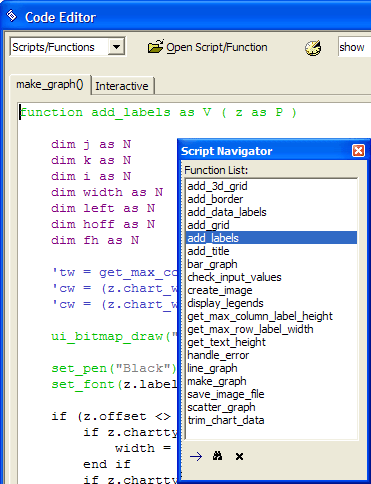

Other Code Editor Functions
Set Relationship Between Tables
When you have the Code Editor open, selecting Code > More Genies > Link Tables displays the Set Relationship Between Tables dialog box. This dialog box generates the Xbasic code necessary to open a parent and child table in a set relationship.
Select the Parent table name from its drop-down list box.
Select the Child table name from the its drop-down list box.
Select the linking field from the parent table or enter a link expression in the Parent Link Expression list box. Click
 to display the <span class=Screen>Expression Builder</span> to help define a link expression.
to display the <span class=Screen>Expression Builder</span> to help define a link expression.Select the linking field from the parent table or enter a link expression in the Child Link Expression list box. Click
to display the <span class=Screen>Expression Builder</span> to help define a link expression. The values generated
here must match the values generated from the parent table.Select the Link Type. The options are:
- "One-to-many"
- "One-to-first (One-to-one link)"
- "One-to-last (One-to-one link)"
- "One-to-closest (One-to-one link)"
Select a value for Referential Integrity. The options are:
"None" - the default
"Cascade changes/deletes"
"Prevent changes"
Select a value from Include Record from Parent table. The options are:
- "Always - even if no matching child record exists"
- "Only if a matching child record DOES exist"
- "Only if a matching child record DOES NOT exist"
Optionally, add a filter expression in the Child Table Filter field. Click the
 to display the <span class=Screen>Filter Builder</span> to help create a filter expression.
to display the <span class=Screen>Filter Builder</span> to help create a filter expression.Optionally, add an ordering expression in the Child Table Order field. Click the to display the <span class=Screen>Order Builder</span> to help create an order expression.
Optionally, check Unique records only.
Optionally, check Descending.
To paste the code later, click Copy code to the clipboard.
To paste the code immediately, click Insert Code in Script Editor.
Click Close to finish.
The Script Navigator is a floating toolbar that you can open while you are editing a script. It shows a list of the functions that have been declared in the script and lets you quickly navigate, within the script, to a particular function (double click to go to the selected function). You can also select a function, and pop up a small window showing the definition of that function. Picture
{kind=link}

Select View > Xbasic Explorer or click
 to open the Xbasic Explorer.
This utility provides a handy reference that lists all:
to open the Xbasic Explorer.
This utility provides a handy reference that lists all:
Xbasic language commands and their syntax
System constants
Functions, organized by their return variable types,and their syntax
Global functions
System objects, and their methods, properties, variables, and calculated values.
Global variables
Sessions
The View > OLE Automation Browser command displays the <span class=Screen>OLE Automation Object Browser</span>. This is useful for advanced users who want to use OLE Automation. The browser shows a list of all of the registered ActiveX controls, their classes, and methods.
You can right-click on a function name in a script, and go to the definition of that function within the script you are editing.
The <span class=Screen>Xbasic Script Genie</span> generates the Xbasic code associated with the library of Action Scripting actions. The result of the process is code that is ready to be copied and pasted into your script or function.
While the Code Editor is open, select Code > Xbasic Script Genie.
Select a category of actions from the Category list.
Select an action from the Action list and click OK.
Provide the data required by the various genie dialog boxes.
Optionally, click Copy code to the clipboard.
Optionally, click Insert Code in Script Editor.
Click Close to finish.
Select View > Global Variables to display the Global Variables dialog box. This dialog lists all the global variables that are currently defined and those that are initialized at startup.
Click Add to display the Add Global Variable dialog box
Enter a name in the Name field.
Optionally, enter an initial value in the Value field. To initialize a variable with an expression, prefix it with an equals sign "=". Do not use quotes for character values.
Select a type in the Type field.
Click OK to continue or Cancel to discard your inputs.
To delete a global variable, select it and click Delete.
To change a property of a variable, select it and click Edit.
Right click and select Genies ... > CSS Style Builder to display the Webform Style Builder.